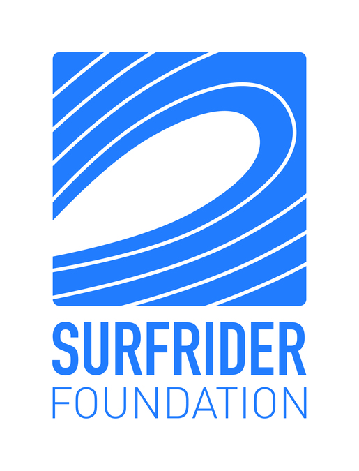
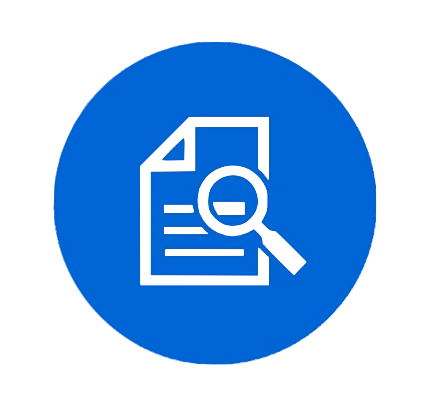
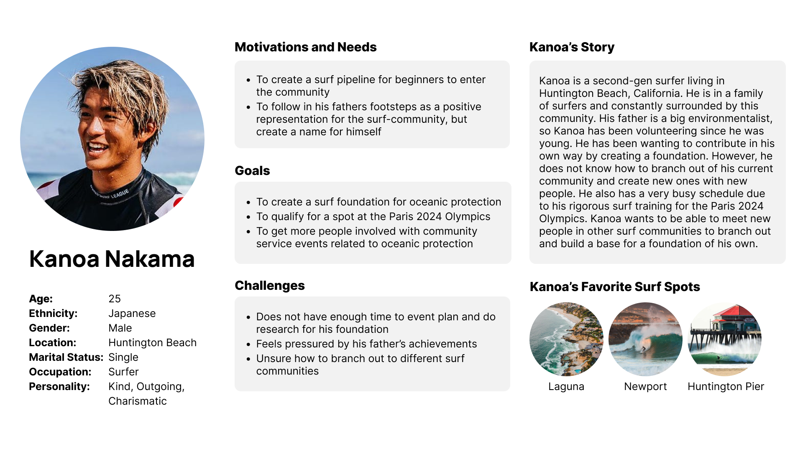
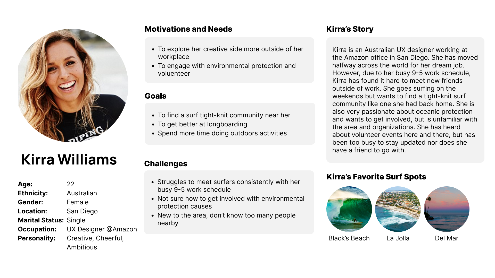

Design Statement

Eighty percent of pollution to the marine environment comes from land, yet most of it is invisible to the majority of people. Surfers are a population of people who interact with the ocean frequently and are often directly affected by the effects of ocean pollution. Additionally, as a surfer myself, I have experienced first-hand how my health can be impacted when surfing in polluted waters. This project aims to target the United Nations Sustainable Development Goal 14, Life Below Water by creating a platform to make volunteering easier and more accessible. Time and convenience are highly valued nowadays, thus by compiling all relevant information related to volunteer events hosted by different organizations, users easily get involved in volunteer communities without feeling confused or intimidated.
Competitor Analysis

To understand the current products on the market targeting similar issues, I conducted a heuristic analysis on the California Surfrider and The Ocean Protection Council using Jacob Nielsen’s 10 Usability Heuristics. This helped me identify the pain points of users as well as some general challenges when incentivizing users to volunteer for community service events.
Read more
After this analysis, I conducted a usability test on the California Surfrider website as it was more closely related to my target audience. For this test, I focused on the effectiveness, efficiency, and satisfaction by asking the user to perform five tasks on the website. This activity not only helped me understand how users navigate websites without prior knowledge, but also some challenges that often arise when making the decision to sign up for a volunteer event.
Read more
User Research

To understand and learn more about my target user’s wants and needs without the project parameters. I interviewed a local Californian surfer who has experienced polluted waters before and is passionate and interested in getting involved. She was able to provide niche insights from the user’s perspective such as the intimidation factor when signing up for a volunteer event with a new community. This was able to help me redirect my project’s functions and features towards the user instead of the product.
Read more
UX Storytelling
  The purpose of UX storytelling is to build empathy by creating realistic stories and scenarios from the user’s point of view. This generates an overall sense of what a potential user could look like, to help get the team on the same page to target pain points and generate solutions. For my project, I made these personas to further understand the way surf communities feel about oceanic protection from different backgrounds.Low Fidelity Prototype
Based on my conclusions from user research, I decided to implement two main features into the application to target the user’s needs. Feature 1: The main function of the app will be to recommend volunteer opportunities and events based on their location, interests, and time availability. Feature 2: An additional feature to boost user engagement is a social aspect that allows users to connect with one another through follows, posts, shares, likes, and comments to document the event, and leave user reviews. This feature will keep the users active on the app to stay updated with live information. I translated these two features into a low fidelity prototype with figma to test out the structure and functionality of the wireflow before implementing a design interface. I designed complete flows without any content to keep the process quick and efficient. Afterwards, I also conducted a usability test with a user where he was able to point out a couple of key elements that disrupted the flow of the features. Read moreInterface Design
Before creating the final high fidelity prototype, I created an interface design with multiple iterations to choose the most appropriate aesthetic to match the application. This helped me establish the design system and skeleton for future design and improvements. I explored different typography, layouts, shape variations, and color palettes. Ultimately, I decided on: Layout: 8 rows, 32px margin, 16px gutter Typography: Circular STD Color Palette: White and Teal Corner radius: 15px These design choices aimed to keep the interface clean, modern, and sleek to reduce cluttering information that may discourage the user from registering for an event. Read moreHigh Fidelity Prototype
Finally, in the final step of this project, I created a high fidelity prototype that integrated the design interface into the low fidelity prototype. This is meant to be a representation of the application itself to be able to conduct effective usability tests with the target users. I designed the prototype on a Iphone 13 Pro Max while paying close attention to UI details, dead ends, as well as the logic of each flow. These are the four tasks that are functional in this prototype: 1. Login and create a new account 2. Browse and register for an event 3. Create posts, browse social feed, and chat feature 4. View favorite and upcoming events Read moreInteractive Prototype
Cognitive Walkthrough
After finishing the interactive prototype, we were also given the opportunity to conduct a brief cognitive walkthrough by asking users that do not know about this product some questions based on appearance and functionality. This was an easy and quick way to gain some feedback about first impressions and future improvements. Here are some key takeaways from the cognitive walkthrough: Use a form of label to show the user that the even has already been registered After registering for an event, return to the original event page instead of the home page to maintain consistency.